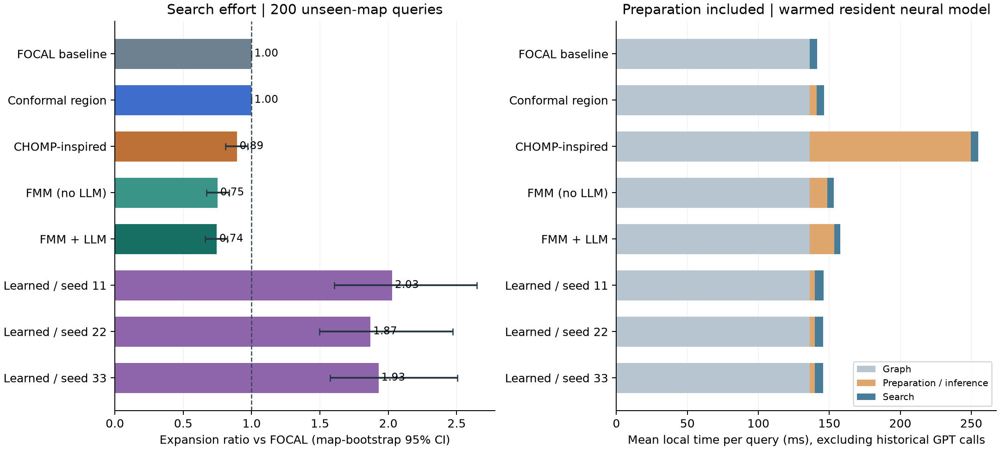
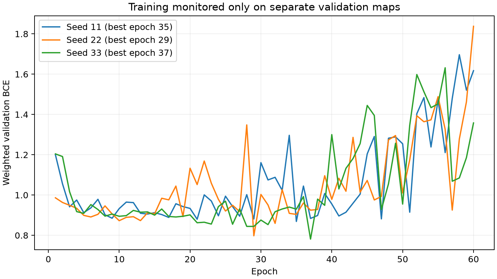
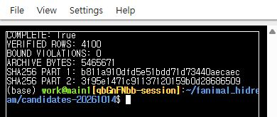

SIRIUS · RTX A5000 · 2026-10-14
네 가지 후보의 실제 효과
Fast Marching은 탐색량을 약 25% 줄였습니다.
주 평가에서 준비 비용까지 포함한 일관된 시간 단축은 확인되지 않았습니다.
주 평가 결과
미관측 지도 20개 × 10문제. 비교 기준은 이번 실험의 같은 FOCAL 탐색기(w=1.1), 기본 거리 안내입니다. 기존 논문 Table 1의 LLM-A* 수치와 직접 비교한 값은 아닙니다.
| 후보 | 탐색량 변화 | 준비 포함 로컬 시간 | 해석 |
|---|---|---|---|
| Conformal 후보 영역 | 0.01% 감소 | 1.26배 | 기준 경로 포함률은 높지만 후보 영역이 너무 넓어 탐색 이득이 거의 없습니다. |
| CHOMP 계열 수리 | 10.77% 감소 | 5.26배 | 충돌·경계 오류가 있는 188개 입력 중 6개를 복구했습니다. 수리 비용이 큽니다. |
| Fast Marching + LLM | 25.58% 감소 | 1.79배 | 탐색량은 감소했습니다. LLM 없는 FMM과의 차이는 뚜렷하지 않습니다. |
| Fast Marching 단독 | 24.95% 감소 | 1.58배 | LLM 없이도 비슷한 탐색 감소를 얻었습니다. 안내 지도 생성 비용이 이득을 상쇄합니다. |
| TransPath 계열 학습 · 3개 시드 | 86.9~102.8% 증가 | 1.25~1.26배 | 이번 500문제 학습·모델 구조에서는 주 평가 성능이 개선되지 않았습니다. |
변화율과 시간 배수는 문제별 기준 대비 비율의 기하평균입니다. 시간에는 그래프 생성·수리·FMM 계산·GPU 추론과 탐색을 포함하며, 과거 GPT API 지연은 별도로 저장했습니다. 모델은 메모리에 상주하고 예열된 상태입니다. 단회 실행이므로 정밀 지연 벤치마크로 해석하지 않습니다.

후보별 판단
1 · Conformal
세 LLM 제안 주변의 격자 후보 영역을 보정하는 형태로 구현했습니다. 별도의 20개 보정 지도에서 α=0.1 기준을 정했습니다. 평가 200문제의 기준 최적 경로 전체 포함률과 지도 내 10문제 동시 포함률은 모두 100%였습니다.
그러나 후보 영역이 자유 칸의 평균 93.6%를 포함했습니다. 탐색량 감소는 0.01%에 그쳤습니다. 현재 방식은 불확실성에 보수적으로 대응하지만 탐색을 충분히 집중시키지 못했습니다. 지도 20개에서 20개 성공이라는 관측의 Wilson 95% 구간은 약 83.9~100%입니다. 이 실험은 후보 경로 3개 중 정답을 선택하는 분류형 Conformal과 구별해야 합니다.
2 · CHOMP 계열
고정 끝점을 둔 연속 경로를 장애물 거리 기울기와 평활화 항으로 수정하고, 격자 경로로 바꾼 뒤 모든 이동을 다시 검사했습니다. 유효한 수리 경로만 탐색의 상한으로 사용했습니다.
오류 입력 188개 중 6개를 복구했고, 전체 200개 중 18개에서 유효한 수리 경로를 얻었습니다. 같은 V-Gate 대조군 대비 탐색량은 11.47% 감소했지만 수리 시간을 포함한 실용적 이득은 확인되지 않았습니다.
3 · Fast Marching
전체 공간에 1차 Eikonal 파동 도착 시간을 계산해 FOCAL의 보조 순위로 사용했습니다. FMM 단독과 LLM 주변에서 파동 속도를 높이는 방식을 비교했습니다.
LLM 결합은 기본 FOCAL 대비 25.58%, FMM 단독은 24.95% 탐색량을 줄였습니다. LLM 결합 / FMM 단독의 탐색량 비율은 0.992, 지도 bootstrap 95% 구간은 0.962~1.026으로 추가 LLM 효과가 뚜렷하지 않았습니다. 다음 실험 대상으로는 지도 계산을 재사용할 수 있는 반복 질의 조건이 적합합니다. 이번 결과만으로 그 조건의 이득을 입증한 것은 아닙니다.
4 · TransPath 계열
합성곱 인코더·2개 Transformer 층·디코더가 경로 포함 가능성을 예측하도록 학습했습니다. 학습 50개 지도 500문제, 검증 10개 지도 100문제를 사용했고 3개 시드 × 60 epoch를 실행했습니다. 총 GPU 학습 시간은 2.07분이며 정답 생성 비용은 별도입니다.
주 평가에서는 탐색량이 1.87~2.03배로 늘었습니다. 새 미로에서는 탐색량이 8.5~17.0% 감소했지만 준비 포함 시간의 개선은 시드별로 일관되지 않았습니다. 현재 학습 규모·구조의 결과이며, 공식 TransPath 전체 방법이나 대규모 학습의 효과를 부정하는 결론은 아닙니다.

실험 범위와 검증
학습 50·검증 10·보정 20·평가 20개 지도를 분리했고, 같은 지도의 문제를 다른 분할에 섞지 않았습니다. 프롬프트 예시 지도는 학습에만 포함했습니다. 주 평가 3,000행, 새 미로 800행, 확대 평가 300행을 저장했습니다. 확대 지도에서는 기존 LLM 좌표를 같은 배율로 변환했으며 새 GPT 추론 성능을 측정하지 않았습니다.
서버·로컬에서 4,100개 경로의 충돌·끝점·격자 이동·길이 상한을 검사했습니다. 별도로 60문제의 최적 길이를 기존 스칼라 충돌 판정 및 Dijkstra 구현으로 대조해 모두 일치했습니다. 결과 ZIP의 344개 파일 해시와 로컬 소스 일치도 확인했습니다.
CHOMP·TransPath는 이번 격자 문제에 맞춘 계열 구현이며 원 논문의 정확 재현이 아닙니다. Conformal은 후보 영역 보정이라는 구체적 변형입니다. 이 범위를 벗어나 일반적인 우열을 주장하지 않습니다.
파일
서버 원본 상세 보고서 · 집계 CSV · 문제별 CSV · 고정 프로토콜 · 로컬 검증 · 가중치·원자료 ZIP
ZIP SHA-256: b811a910dfd5e51bdd71d73440aecaec3f95e1471c91137120159b0d28686509
